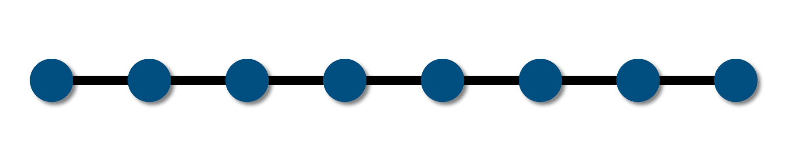

Exact Diagonalization

A small 1D lattice with number of sites $L=8$.
The ED method allows us to calculate the full spectrum
of the Hamiltonian describing a particular system. The method is
based on three major steps, namely (a) create appropriate basis
states, (b) compute the matrix elements of the Hamiltonian using the
basis states and (c) diagonalize the Hamiltonian matrix to obtain
the eigenspectrum. We use the Fock state basis to span the Hilbert
space of the system. For example, for the one-dimensional bosonic
system with $L$ number of sites, the basis vectors can be written as
$$ \{|n_1,~n_2,~n_3,~.~.~.~n_L\rangle\} \equiv |n_1\rangle \otimes |n_2\rangle \otimes |n_3\rangle \otimes~.~.~.~|n_L\rangle $$
where $n_i$ is the number of particles at $i^{th}$ site. Assuming the on-site dimension to be $m$,
the full Hilbert space dimension $D = m^L$ without considering any
symmetry in the system. Because of this exponential growth of $D$, it becomes impossible to store a
single vector for a large system. For example, if we consider
hard-core bosons ($m = 2$) and small system of length $L=30$ it takes $8$GB of memory to
store a single $2^{30}$ dimensional vector with "double" precision.
On the other hand, the computational complexity to get all the eigenstate cranks up to $\mathcal{O} (D^3)$.
However, one can exploit the use of good quantum numbers of the system to reduce the basis dimension substantially. To get the essence, in the model
\begin{equation}\label{eq:bhham}
{H} = -\sum\limits_{\langle i,j \rangle}t_{i,j}(a^\dagger_{i}a_{j}+ H.c.) + \frac{U}{2}\sum\limits_i{n}_{i}({n}_{i} - 1) - \sum\limits_i\mu_i n_{i}
\end{equation}
for example, known as the Hubbard model,
the total number of particles $N=\sum_j n_j$ is a conserved quantity.
This assumption ensures that the Hamiltonian is block diagonal, and each block can be solved
separately. This substantially reduces the effective computational cost and memory needed for the calculations.
Note that this process makes the Hamiltonian matrix less sparse, which consumes more
time to diagonalize.
Lanczos or Arnoldi method makes it more efficient if we are only interested in
lowe-lying states, which is often sufficient for essential studies. In this process,
we approximate a Hamiltonian ($H$)
in a $p$-dimensional orthonormal basis space generated from Krylov space: a vector
space created by an arbitrary vector $v$ and the $H$, given by
\begin{equation}
\{ v,~Hv,~H^2v,~H^3v,~.~.~.~H^{p-1}v \}.
\end{equation}
In this orthonormal basis, the $H$ becomes $\tilde H$, whose largest eigenvalue
converges rapidly to that of $H$ with increasing $p$. In general, with $p\ll D$, the
first eigenstate is achieved with high accuracy and to improve the accuracy of excited
states, one can increase $p$ further.
To compare the ED method with other numerical methods, I have shown the first Mott lobe of the Bose Hubbard model in the
DMRG chapter, calculated using different methods.
The ED method can also be used to study the dynamics of systems. As mentioned in the
beginning, we can have access to the system's dynamical property by solving the
corresponding time-dependent Schrödinger-equation. In other words, we need to calculate the time-evolution
operator ${\mathcal{U}}(t) = e^{-iH(t)t/\hbar}$ and a given state
$|\Psi(t=0)\rangle$ can be
evolved in time $t$ as
\begin{equation}\label{eq:tSchr}
|\Psi(t)\rangle = {\mathcal{U}}(t) |\Psi(t)\rangle.
\end{equation}
Note that the exponentiation is a computationally demanding task, which again
restricts us to small system sizes.
Related references
-
Anders W. Sandvik,
Computational Studies of Quantum Spin Systems,
arXiv:1101.3281 (2011).
Free resources
-
QuSpin:
Phillip Weinberg, Markus Schmitt, and Marin Bukov,
Python package for exact diagonalization.
Explore other numerical methods